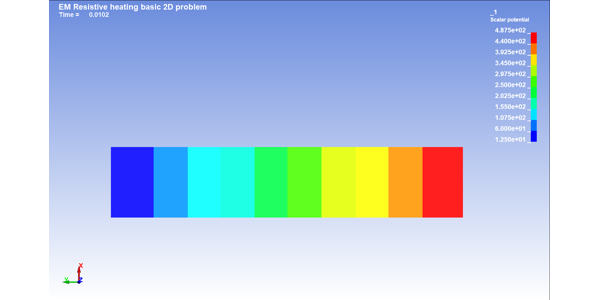
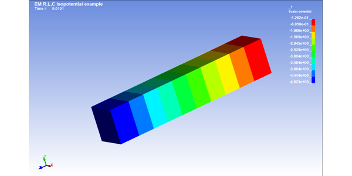

EM examples#
These examples show how to create and use electromagnetic models.


Resistive heating 2D


Resistive heating 2D multiple-connect isopotential
Resistive heating 2D multiple-connect isopotential


RLC circuit by isopotential